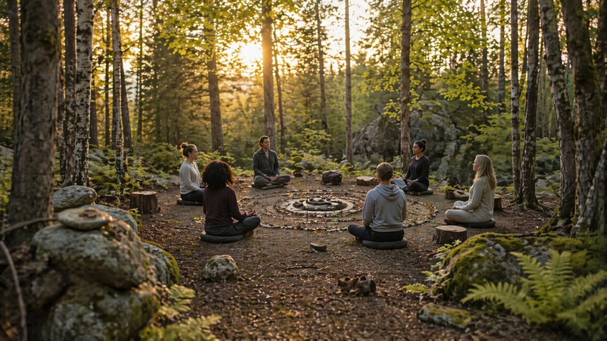

Apaisement
La méditation permet de ralentir le rythme intérieur et d’installer plus de calme.

La méditation aide à calmer le mental, relâcher les tensions et créer un espace intérieur plus paisible.
Dans l’ambiance naturelle du centre, cette pratique devient une invitation à ralentir, écouter son souffle et retrouver une forme d’équilibre simple.
Une pratique douce qui soutient le bien-être global et la reconnexion à soi.
La méditation permet de ralentir le rythme intérieur et d’installer plus de calme.
En revenant au souffle et au moment présent, on retrouve souvent plus d’espace et de légèreté.
Cette pratique favorise une meilleure connexion entre le corps, l’esprit et l’environnement.

“Dans le silence et le souffle, on retrouve doucement l’espace intérieur dont on a besoin.”